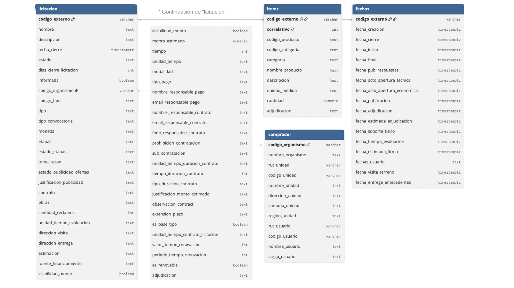
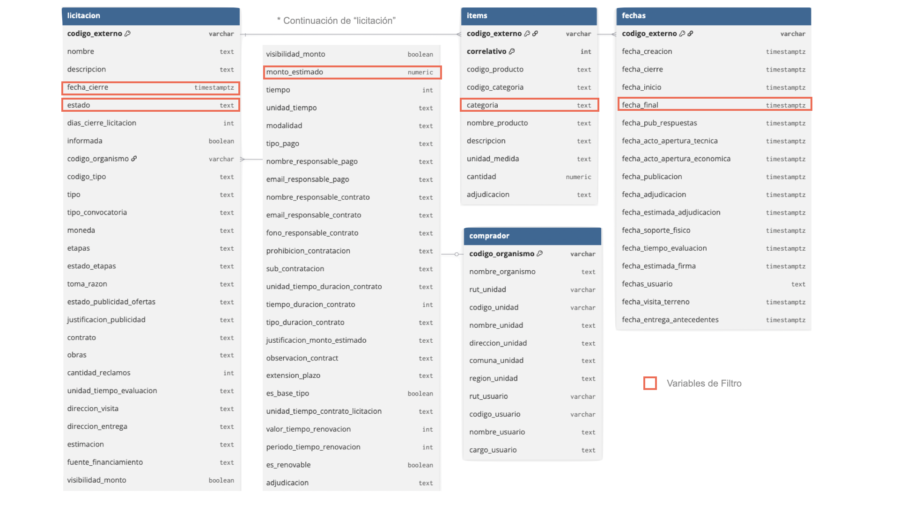
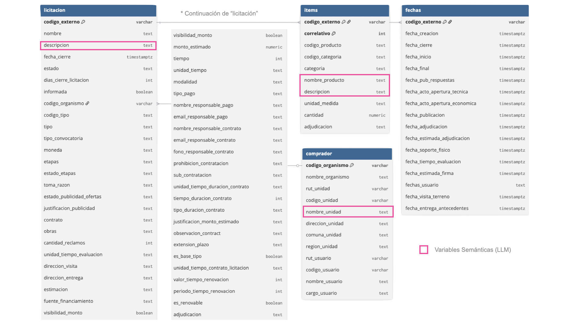
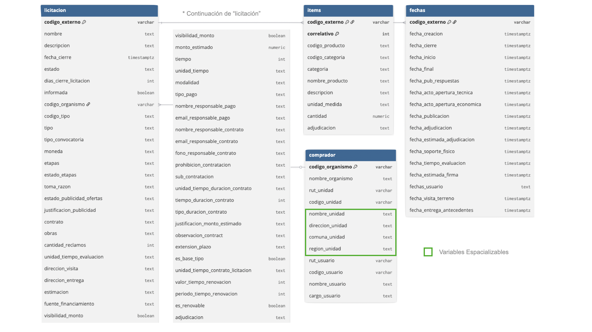

4 Ofertas
En este libro usamos ofertas u ofertas públicas para referirnos a las licitaciones que publica el Estado: son las oportunidades de negocio que Radar MP busca. Este capítulo explica cómo llegan a la base de datos y qué información se guarda de cada una.
4.1 Cada mañana: la API de Mercado Público
Cada día programado (por defecto, de lunes a viernes a las 08:30) el worker pregunta a la API por las licitaciones publicadas hasta el día anterior que falten. El proceso tiene dos pasos:
- Listado. Una consulta por fecha devuelve los códigos de las licitaciones publicadas, con su nombre, estado y fecha de cierre. Esto toma segundos.
- Detalle. Para cada código se pide la ficha completa: descripción, comprador, monto estimado, fechas y lista de productos. Esto es lo lento.
La API rechaza las consultas si se le pide muy rápido: con un segundo entre consultas falla la mitad de las veces. Por eso el cliente (backend/src/radar/mp_client/) espera dos segundos entre consultas y, si igual recibe un rechazo, espera cada vez más antes de reintentar, hasta seis veces. Con ~500 licitaciones, un día completo tarda unos 20 minutos.
4.1.1 Días incompletos y recuperación
Un día cuenta como completo solo si se obtuvo el detalle de todas sus licitaciones sin errores. Si el computador estuvo apagado o la API falló, la siguiente ejecución recupera automáticamente los días pendientes (hasta 14 hacia atrás). Si falta más tiempo, se completa con Datos Abiertos. La pantalla de Operación muestra la cobertura de los últimos 14 días y permite reprocesar cualquier día con un botón.
uv run radar ingest --date 2026-10-27 # un día específico
uv run radar ingest --catch-up # todos los días pendientes4.2 Cada mes: Datos Abiertos
El día 3 de cada mes el worker descarga el archivo del mes anterior desde ChileCompra. Es un ZIP de 15 a 35 MB con un CSV donde cada fila combina una licitación, uno de sus productos y una de las ofertas recibidas. Se lee con DuckDB y un mes completo se carga en unos 10 segundos.
El archivo tiene defectos conocidos que el importador tolera y cuenta: viene en una codificación antigua (cp1252), usa coma decimal, trae montos imposibles y algunas líneas corruptas (849 de 160 mil en marzo de 2026).
4.2.1 Cómo se combinan las dos fuentes
Cuando una licitación llega por ambas vías, la regla es simple: la API manda en el contenido, Datos Abiertos manda en el resultado.
- Si la licitación ya tiene la ficha de la API, el archivo solo rellena los campos vacíos.
- El estado siempre se actualiza desde el archivo: así se sabe si terminó adjudicada, desierta o revocada.
- Las adjudicaciones solo vienen del archivo y siempre se reemplazan.
4.3 Cómo vienen los datos de Mercado Público
Cada licitación llega como cuatro bloques de información: la licitación misma (más de cincuenta campos), sus ítems (los productos pedidos), sus fechas (publicación, cierre, adjudicación y otras) y el comprador (organismo y unidad de compra). La Figura 4.1 muestra esa estructura tal como la entrega la fuente.

No todos los campos sirven igual. Radar MP usa tres grupos, marcados en las pestañas siguientes:
Estado, fecha de cierre, monto estimado y categoría de los ítems: permiten descartar o priorizar sin leer el texto.

Descripción de la licitación, nombre y descripción de los productos y nombre de la unidad compradora: es el texto que leen la búsqueda por similitud y los modelos de lenguaje.

Nombre, dirección, comuna y región de la unidad compradora: permiten ubicar la demanda en el territorio.

4.4 Qué se guarda de cada licitación
La tabla tender guarda una fila por licitación. Los campos más usados son:
tender
| Campo | Para qué se usa |
|---|---|
codigo |
Identificador; enlaza a la ficha en Mercado Público |
nombre y descripcion |
Lo que leen las reglas, la búsqueda y los modelos |
estado |
Saber si sigue abierta o cómo terminó |
monto_estimado |
Componente económico del puntaje |
fecha_cierre |
Componente de plazo del puntaje y filtro «solo abiertas» |
codigo_organismo, region |
Quién compra y dónde (ver Organismos compradores) |
first_seen_date |
El día en que apareció; agrupa la bandeja por día |
raw |
Copia íntegra de la respuesta de la API, por si se necesita otro dato |
La consultoría de gobernanza de la Subdere quedó guardada así el 27 de octubre: su nombre y descripción completos, la Subdere como comprador, su fecha de cierre y la lista de productos pedidos. Con eso basta para que el matching la evalúe.
- La API trae lo nuevo cada mañana; Datos Abiertos trae el histórico y el resultado cada mes.
- Los días incompletos se recuperan solos.
- Saber qué se compra no basta: el capítulo siguiente trata de quién compra.